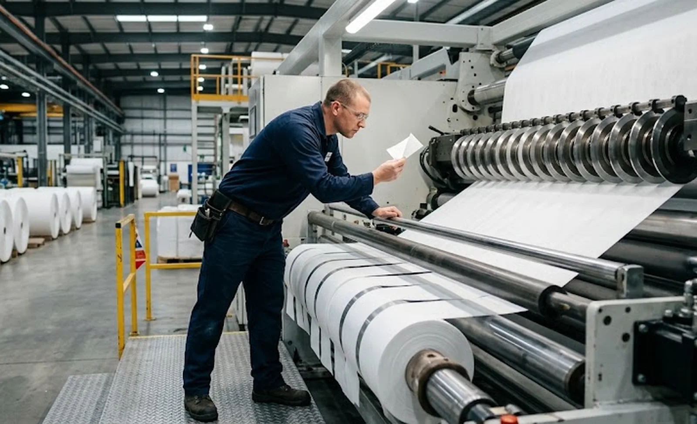
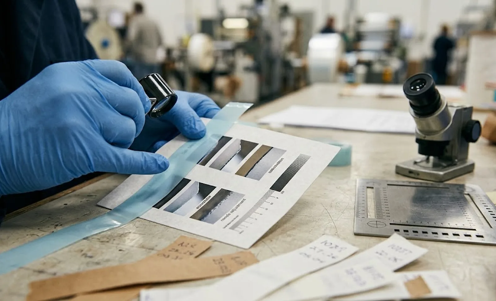

Published October 1, 2026 | By HDPTH Technical Editorial Team

Ask three converting plants what “good edge quality” means and you will get three different answers: no visible dust on baby wipes, a burr below ten microns on a coated film, or simply no complaints this quarter. That gap is where disputes live — suppliers demonstrate clean edges on their own stock rolls, buyers accept on sight, and the first production week reveals the difference. This guide shows how to define edge quality, match the cutting method to the material, measure each defect class, and hold the result in specification — building on our razor, shear and score comparison.
The five defect classes worth specifying
Edge defects fall into five practical classes, each behaving differently:
- Burr: a raised lip of material protruding from the cut face, typical of shear and score cuts with wrong clearance or dull blades. Measured in microns.
- Edge dust and particles: loose debris shed from the edge — critical for hygiene, medical and any web passing over rollers, where dust becomes contamination.
- Melt, haze or heat damage: a glazed or beaded edge on films slit with a razor at speed, where friction heat re-fuses the cut.
- Fuzz, slivers and angel hair: fibrous edge material, common on nonwovens and elastic laminates cut with a worn or misaligned blade.
- Edge straightness: deviation of the cut line from the intended lane — a tension and web-handling effect rather than a knife effect, tied to slit width tolerance.
| Material family | Dominant edge risk | Preferred method | Acceptance focus |
|---|---|---|---|
| Spunbond / SMS nonwovens | Fuzz, dust, angel hair | Razor or shear | No visible dust at 10×; fuzz by tape test |
| Spunlace / hydroentangled | Fibre pull-out at soft edges | Sharp shear or razor | Edge integrity after winding; sliver limit |
| Films (PE, PET, PP) | Burr, melt beads, haze | Shear with tuned clearance | Burr height in µm; no melt at 10× |
| Coated / laminated webs | Delamination, coating debris | Shear; crush for brittle coatings | No coating chipping; tape-test particles |
| Elastic materials | Necking, deformed edges | Razor, low cut-point tension | Edge waviness; width after relaxation |
How to measure each defect class
A number without a method is not a specification. Fix the technique in the acceptance protocol:
- Burr height: optical microscope or profile projector at 50–100×, reading protrusion beyond the nominal edge line; comparator plates for shop-floor checks. Sample three lanes at start, middle and end of roll — burr grows with knife wear, so end-of-roll governs.
- Edge dust: standardised tape press onto the edge region, then count and classify particles under magnification; a black-cloth wipe test gives operators an hourly check on hygiene materials.
- Melt and haze: visual comparison against agreed reference photographs at defined magnification, graded pass/fail per lane.
- Fuzz and slivers: tape test plus a 1-to-5 grade against reference images — subjective, but consistent once both parties train on the same photo library.
- Straightness: deviation over the full roll with a straightedge and feeler gauges, or read from a vision system during the run.

The machine factors that actually hold edge quality
Edge quality in production is not luck; it is the compound result of a few controllable variables:
- Blade sharpness: the single biggest factor. Define change intervals from your own burr-versus-hours data — our knife life guide shows how to cost the interval.
- Knife clearance and overlap: clearance as a percentage of web thickness is the decisive shear setting; overlap sets the razor angle. Details in our knife setup guide.
- Holder rigidity: vibration or play in the knife holder mounting shows up as fuzz and wavy edges.
- Web tension at the cut point: too little wrinkles the web into the blade; too much necks soft materials — see the tension zone architecture guide.
- Speed: faster lines heat razor-bladed films and shear points alike — prove the specification at production speed, not demonstration speed.
Proving edge quality at acceptance
Edge quality belongs in the acceptance protocol alongside width tolerances and roll-density checks. Insist that the run uses your production material at production speed, that sampling follows the plan fixed above, and that an inline inspection system, if fitted, is calibrated against physical samples from the same run. Agree reference photographs and a dispute-resolution step before the trial — not after the first rejected truckload.
Need a defined edge-quality window for your material?
Send HDPTH your material construction, thickness, slit widths and downstream requirements. We propose the cutting method, knife configuration and an edge-quality acceptance plan you can hold us to.
Submit Your Project InquiryQuestions to put to every vendor
- Which cutting method do you recommend for our material, and what burr and dust results did you achieve on similar constructions — at what speed?
- What knife-change interval keeps edges in specification on abrasive materials, and how fast can blades be changed?
- Can we run the acceptance trial on our own material with our operators present, with results written into the protocol?
- How are knife settings — clearance, overlap, holder pressure — recorded, so a blade change reproduces the accepted edge quality?
Frequently asked questions
What edge quality can we reasonably specify on a slitter rewinder?
Specify edge quality relative to your material and process, not as an absolute number. A realistic framework: burr height below about five percent of web thickness for shear-cut films and paper, no visible dust under ten-power magnification for hygiene and medical nonwovens, no melt beads or haze beyond an agreed visual limit, and no loose edge defects that detach under a tape test. Anything tighter needs downstream justification and should be proven on your own material during acceptance trials.
How is burr height measured on slit edges?
Measure the slit edge under a calibrated optical microscope or profile projector at fifty to one hundred times magnification, reading the protrusion beyond the nominal edge line. On the shop floor, a comparator plate with graduated burr references works well. Sample at least three lanes at start, middle and end of the roll, because knife wear makes the burr grow through the roll. Record the method in the acceptance protocol so both parties measure the same thing.
Why does the same machine give clean edges on one material and dusty edges on another?
Edge quality depends on the interaction between cutting method, blade condition and material behaviour. A razor slices cleanly through soft nonwovens but fuzzes or melts a filled film; a correctly adjusted shear cracks film and paper sharply but can crush lofty nonwovens; a score cut on hard materials leaves micro-cracks that shed particles. Stiffness, thickness, fillers, coatings and melt temperature all shift the optimum — which is why a trial on your actual material is the only reliable evidence of production edge quality.
How often do we need to change blades to keep edges in specification?
Intervals depend on material abrasiveness, speed and the edge limit you set. Filled or glass-fibre nonwovens can dull shear knives in a few hours, while clean films may run a full day between changes. Track burr height and dust against running hours to establish your own interval, then automate it — modern automatic knife positioning systems reposition or change blades in minutes, keeping the interval economical. Build it into the operator standard rather than waiting for quality complaints.
Can an inspection system guarantee edge quality on every roll?
An inline inspection system monitors edge appearance — dust plumes, detectable burrs, slivers at the trim lanes — and alarms or stops the machine when the signal drifts, preventing a bad roll from shipping. It does not replace blade management: by the time a camera sees the defect, the knife is past its best window. The strongest setup combines disciplined blade-change intervals, correct knife setup practice and an inspection layer for traceability and rapid detection.
Sources
- ISO 9073 series: test methods for nonwovens — the reference frame for edge-related sampling on nonwoven webs
- EDANA: nonwovens industry test methods and recommended practices for linting and particle assessment
- TAPPI: test methods for paper and board, including edge-quality and dust measurement practice
- EU Machinery Regulation (EU) 2023/1230: information-for-use duties for blade change and knife setup